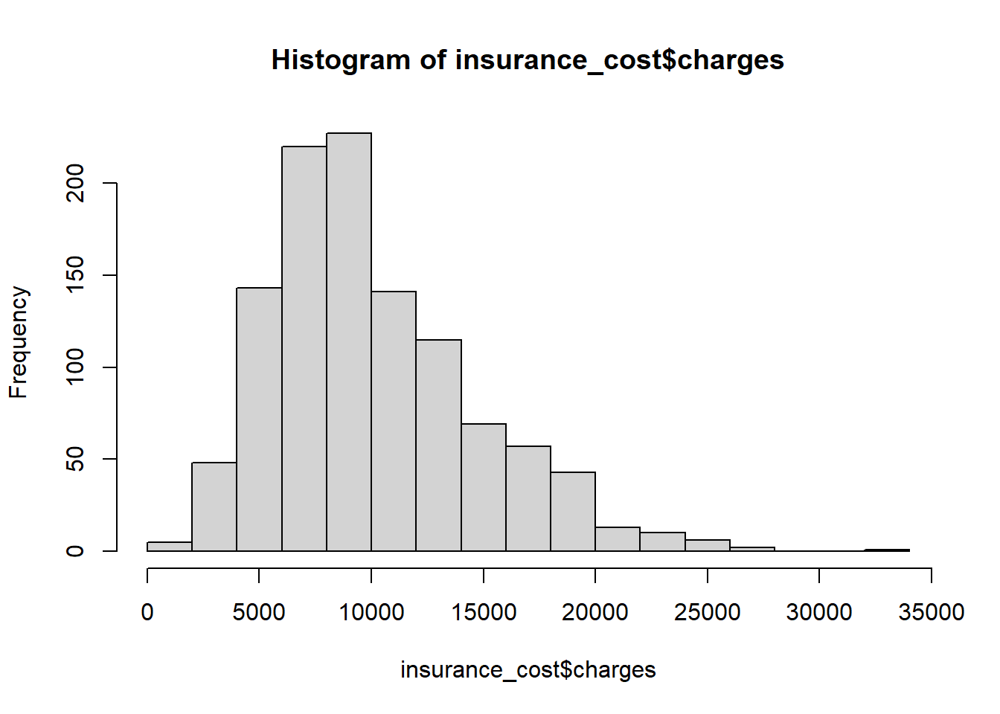
Analys av försäkringskostnader
1. Inledning
Syftet med analysen är att undersöka vilka faktorer som är relaterade till försäkringskostnader samt att utvärdera om en regressionsmodell kan användas för att förklara och förutsäga kostnader för framtida kunder.
2. Dataförståelse
2.1 Översikt av datamängd
Datamängden består av 1100 observationer och 14 variabler och innehåller både numeriska och kategoriska variabler. Den beroende variabeln i analysen är försäkringskostnaden (charges).
Flera variabler, såsom age, bmi och charges, är numeriska, medan variabler som sex, smoker och chronic_condition är kategoriska. De kategoriska variablerna är lagrade som teckenvariabler (chr) och behöver därför omvandlas till faktorer för att kunna användas korrekt i vidare analys.
Vid en första genomgång framgår att vissa kategoriska variabler inte är standardiserade, exempelvis genom blandning av små och stora bokstäver. Detta kan påverka analysen och behöver därför åtgärdas.
Det finns även ett begränsat antal saknade värden i datamängden och återfinns i variablerna bmi (28 observationer), exercise_level (22 observationer) och annual_checkups (20 observationer). De saknade värdena behöver hanteras innan analysen, då de annars kan påverka både statistiska sammanfattningar och regressionsmodeller.
glimpse(insurance_cost_raw)Rows: 1,100
Columns: 14
$ customer_id <chr> "C100000", "C100001", "C100002", "C100003", "C100004…
$ age <dbl> 48, 40, 50, 62, 39, 39, 63, 52, 36, 49, 36, 36, 45, …
$ sex <chr> "female", "male", "female", "male", "female", "femal…
$ region <chr> "east", "west", "south", "north", "east", "west", "e…
$ bmi <dbl> 24.8, 29.5, 18.3, 25.5, 27.3, 23.3, 23.9, 24.8, 28.6…
$ children <dbl> 0, 1, 2, 5, 2, 4, 3, 2, 0, 2, 2, 2, 1, 1, 1, 1, 0, 3…
$ smoker <chr> "no", "no", "no", "yes", "no", "no", "no", "no", "no…
$ chronic_condition <chr> "no", "no", "no", "no", "no", "no", "no", "no", "yes…
$ exercise_level <chr> "high", "medium", "high", "medium", "medium", "high"…
$ plan_type <chr> "basic", "basic", "standard", "basic", "basic", "sta…
$ prior_accidents <dbl> 0, 0, 0, 0, 0, 0, 0, 0, 0, 1, 0, 1, 0, 0, 0, 0, 0, 0…
$ prior_claims <dbl> 0, 1, 0, 0, 1, 0, 0, 0, 1, 0, 0, 1, 0, 1, 3, 0, 0, 0…
$ annual_checkups <dbl> 1, 4, 3, NA, 0, 2, 1, 2, 3, 2, 3, 3, 4, 4, 2, 1, 2, …
$ charges <dbl> 6439.10, 8274.06, 5190.99, 14500.35, 6534.40, 8026.3…dim(insurance_cost_raw)[1] 1100 14colSums(is.na(insurance_cost_raw)) customer_id age sex region
0 0 0 0
bmi children smoker chronic_condition
28 0 0 0
exercise_level plan_type prior_accidents prior_claims
22 0 0 0
annual_checkups charges
20 0 3. Datastädning och förberedelse
Datamängden förbereddes inför analys genom standardisering av textvariabler, omkodning av kategoriska variabler till faktorer, hantering av saknade värden samt konstruktion av nya variabler för att förbättra tolkbarhet och analysbarhet.
3.1 Städning av kategoriska variabler
Onödiga mellanslag i textvariabler avlägsnades och textformat standardiserades, exempelvis genom omvandling till gemener respektive titel-format. Syftet var att undvika att identiska kategorier behandlas som olika värden på grund av inkonsekvent stavning.
Därefter omvandlades relevanta variabler (sex, region, smoker, chronic_condition, exercise_level, plan_type) till faktorer. Detta är nödvändigt för att variablerna ska kunna användas korrekt i vidare statistisk analys och regressionsmodeller.
En kontroll av dubletter, både på radnivå och baserat på customer_id, visade att inga dubbla observationer förekom i datamängden.
glimpse(insurance_cost)Rows: 1,100
Columns: 20
$ customer_id <chr> "C100000", "C100001", "C100002", "C100003", "C100004…
$ age <dbl> 48, 40, 50, 62, 39, 39, 63, 52, 36, 49, 36, 36, 45, …
$ sex <fct> female, male, female, male, female, female, female, …
$ region <fct> East, West, South, North, East, West, East, North, E…
$ bmi <dbl> 24.8, 29.5, 18.3, 25.5, 27.3, 23.3, 23.9, 24.8, 28.6…
$ children <dbl> 0, 1, 2, 5, 2, 4, 3, 2, 0, 2, 2, 2, 1, 1, 1, 1, 0, 3…
$ smoker <fct> no, no, no, yes, no, no, no, no, no, yes, no, no, no…
$ chronic_condition <fct> no, no, no, no, no, no, no, no, yes, no, no, yes, no…
$ exercise_level <fct> high, medium, high, medium, medium, high, high, medi…
$ plan_type <fct> Basic, Basic, Standard, Basic, Basic, Standard, Basi…
$ prior_accidents <dbl> 0, 0, 0, 0, 0, 0, 0, 0, 0, 1, 0, 1, 0, 0, 0, 0, 0, 0…
$ prior_claims <dbl> 0, 1, 0, 0, 1, 0, 0, 0, 1, 0, 0, 1, 0, 1, 3, 0, 0, 0…
$ annual_checkups <dbl> 1, 4, 3, 2, 0, 2, 1, 2, 3, 2, 3, 3, 4, 4, 2, 1, 2, 1…
$ charges <dbl> 6439.10, 8274.06, 5190.99, 14500.35, 6534.40, 8026.3…
$ log_charges <dbl> 8.770144, 9.020881, 8.554680, 9.581928, 8.784836, 8.…
$ bmi_category <fct> normal, overweight, underweight, overweight, overwei…
$ age_group <fct> middle, middle, older, older, middle, middle, older,…
$ risk_level <fct> low, low, low, medium, low, low, low, low, low, medi…
$ history <dbl> 0, 1, 0, 0, 1, 0, 0, 0, 1, 1, 0, 2, 0, 1, 3, 0, 0, 0…
$ history_level <fct> none, low, none, none, low, none, none, none, low, l…3.2 Hantering av saknade värden
Saknade värden hanterades beroende på variabeltyp. För den kategoriska variabeln exercise_level ersattes saknade värden med en egen kategori (“unknown”) för att behålla observationer i analysen.
För de numeriska variablerna bmi och annual_checkups ersattes saknade värden med medianen. Medianen valdes då den är robust mot extremvärden och därmed minskar risken för snedvridning i analysen.
colSums(is.na(insurance_cost)) customer_id age sex region
0 0 0 0
bmi children smoker chronic_condition
0 0 0 0
exercise_level plan_type prior_accidents prior_claims
0 0 0 0
annual_checkups charges log_charges bmi_category
0 0 0 0
age_group risk_level history history_level
0 0 0 0 3.3 Skapande av nya variabler
Flera nya variabler skapades för att göra analysen mer tolkbar och för att fånga mönster som inte framgår lika tydligt i de ursprungliga variablerna.
En log-transformerad variabel, log_charges, skapades eftersom histogram visade att kostnadsvariabeln är snedfördelad. Transformeringen ger en mer symmetrisk fördelning, vilket är fördelaktigt vid regressionsanalys.
Variabeln bmi_category skapades genom att dela in BMI i kategorier. Detta motiveras av att BMI visade ett positivt samband med kostnader i både korrelationsanalys och scatterplots, samtidigt som kategorisering underlättar jämförelser mellan grupper.
Variabeln age_group skapades för att möjliggöra jämförelser mellan olika åldersgrupper, vilket kan bidra till en mer lättolkad analys jämfört med enbart kontinuerlig variabel.
En sammansatt riskvariabel, risk_level, konstruerades utifrån rökstatus och BMI. I konstruktionen användes en förenklad indelning där BMI över 30 klassificerades som hög risk, vilket motsvarar kategorin “obese”. Detta motiveras av den inledande analysen, där BMI visade ett positivt samband med kostnader, samtidigt som rökare uppvisade tydligt högre kostnader i boxplotar. Variabeln chronic_condition inkluderades inte i denna sammanslagning, då dess samband med kostnader bedömdes vara svagare i den inledande analysen, och för att undvika att skapa en alltför komplex variabel.
Slutligen skapades variablerna history och history_level, där tidigare olyckor och tidigare claims kombinerades. Detta motiveras av att båda variablerna visade positiva samband med kostnader och beskriver relaterade aspekter av individens skadehistorik.
Nedan presenteras fördelningen för ett urval av de skapade variablerna.
insurance_cost %>% count(bmi_category)# A tibble: 4 × 2
bmi_category n
<fct> <int>
1 normal 285
2 underweight 32
3 overweight 478
4 obese 305insurance_cost %>% count(risk_level)# A tibble: 3 × 2
risk_level n
<fct> <int>
1 low 896
2 medium 162
3 high 42insurance_cost %>% count(history_level)# A tibble: 3 × 2
history_level n
<fct> <int>
1 none 699
2 low 372
3 high 293.4 Sammanfattning
Datastädningen syftade till att skapa en konsekvent och analysbar datamängd. Genom standardisering av kategoriska variabler, hantering av saknade värden samt konstruktion av nya variabler förbättrades förutsättningarna för den fortsatta analysen. Dessa steg möjliggör en mer tillförlitlig beskrivande analys och regressionsmodellering.
4 Beskrivande analys
Den beskrivande analysen används för att identifiera vilka variabler som är mest relevanta att inkludera i regressionsmodellen.
4.1 Fördelning av försäkringskostnader
Fördelningen av försäkringskostnader undersöktes med histogram. I ursprunglig skala är variabeln tydligt högerskev, vilket innebär att majoriteten av observationerna har relativt låga kostnader medan ett mindre antal observationer uppvisar mycket höga värden.
plot_charges_distribution(insurance_cost)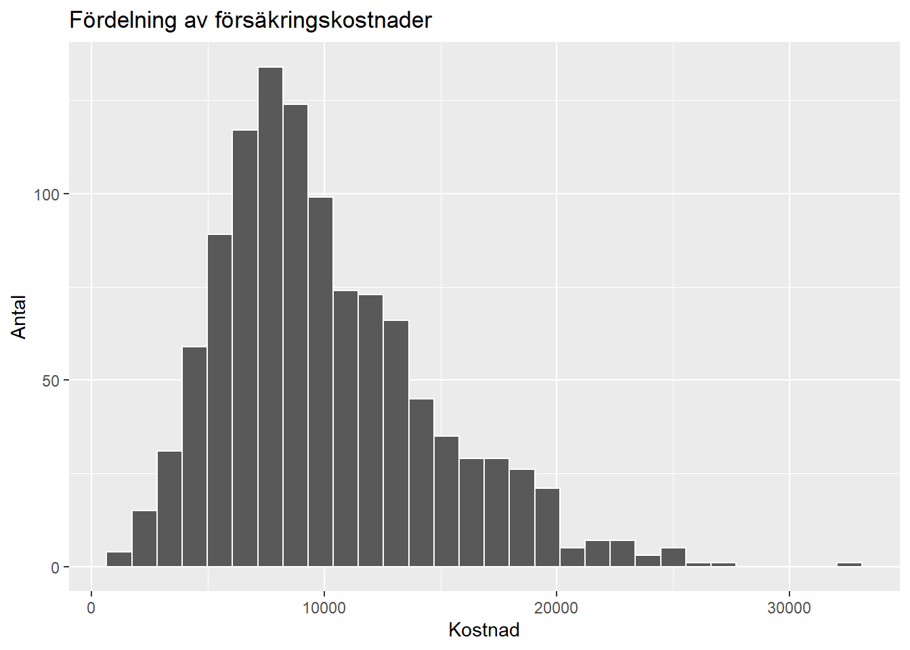
För att undersöka om fördelningen påverkades av skillnader mellan grupper visualiserades kostnaderna även efter rökstatus. Resultatet visar att rökare generellt har högre och mer spridda kostnader än icke-rökare. Detta tyder på att den totala fördelningen delvis utgörs av två grupper med olika kostnadsnivåer.
plot_charges_distribution_fill(insurance_cost, smoker)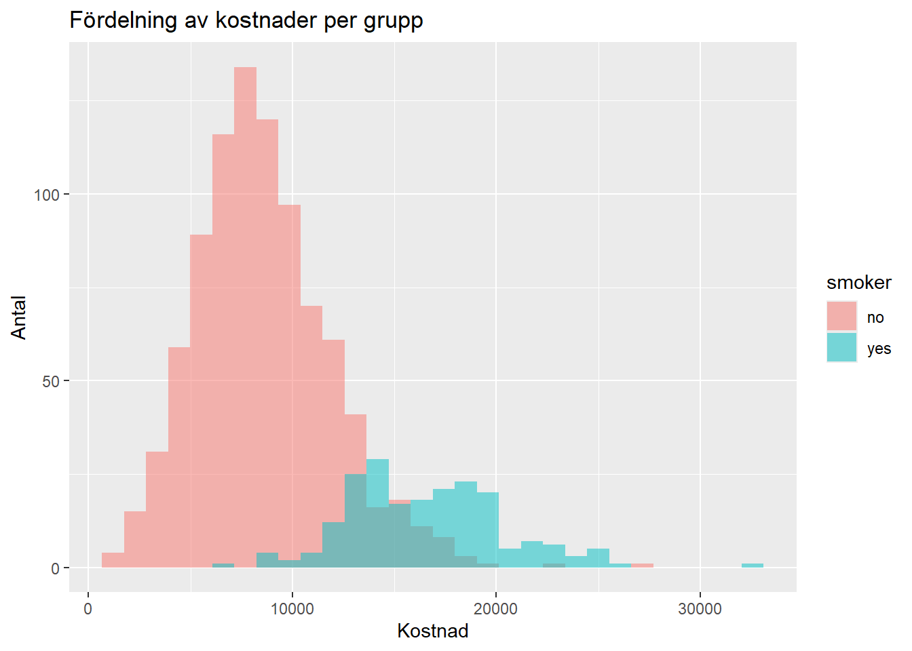
Eftersom originalvariabeln var skev undersöktes även en log-transformerad version av kostnaderna. Den log-transformerade variabeln uppvisar en betydligt mer symmetrisk fördelning, vilket talar för att transformationen är lämplig vid fortsatt statistisk analys.
plot_log_charges_distribution(insurance_cost)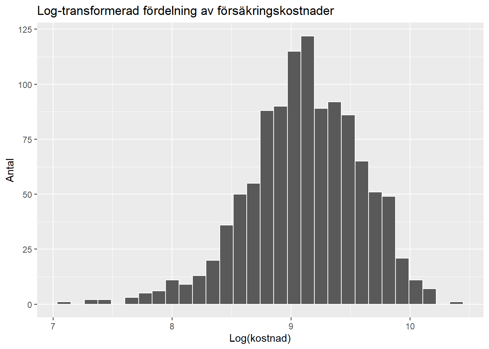
Sammantaget visar resultaten att försäkringskostnaderna inte är normalfördelade i ursprunglig skala, att rökstatus är starkt relaterad till kostnadsnivå, samt att log-transformering förbättrar fördelningens symmetri.
4.2 Samband med numeriska variabler
För att undersöka hur numeriska variabler hänger samman med försäkringskostnader analyserades sambanden både visuellt med scatterplots och mer översiktligt med en korrelationsmatris.
Scatterploten mellan BMI och kostnader visar ett positivt samband, där högre BMI tenderar att vara förknippat med högre kostnader. När rökstatus inkluderas framgår att sambandet är tydligare för rökare än för icke-rökare, vilket tyder på att effekten av BMI kan variera beroende på rökstatus. Detta ger också stöd för konstruktionen av den sammansatta variabeln risk_level, där både BMI och rökstatus kombineras för att fånga deras gemensamma effekt på kostnader.
plot_scatter_grouped(
insurance_cost,
bmi,
color_var = smoker,
title = "BMI, rökstatus och kostnader",
x_label = "BMI",
color_label = "Rökstatus"
)`geom_smooth()` using formula = 'y ~ x'
`geom_smooth()` using formula = 'y ~ x'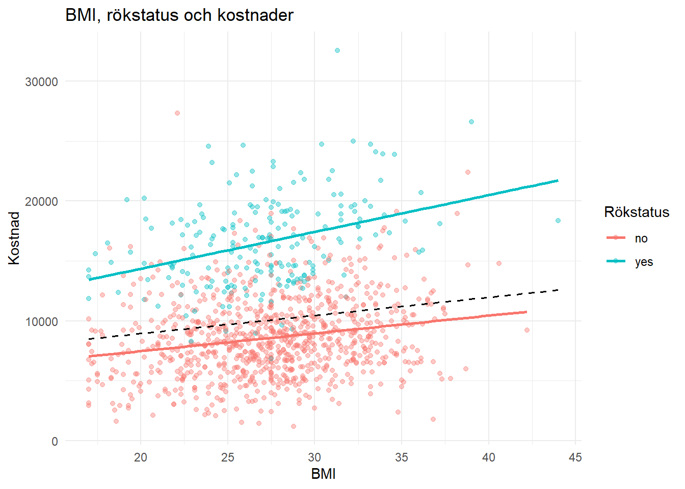
För ålder observeras ett liknande mönster, där kostnaderna generellt ökar med stigande ålder. När rökstatus inkluderas framgår att rökare konsekvent har högre kostnader än icke-rökare inom samtliga åldersgrupper, vilket indikerar att rökstatus har en stark effekt oberoende av ålder.
plot_scatter_grouped(
insurance_cost,
age,
color_var = smoker,
title = "Ålder, rökstatus och kostnader",
x_label = "Ålder",
color_label = "Rökstatus"
)`geom_smooth()` using formula = 'y ~ x'
`geom_smooth()` using formula = 'y ~ x'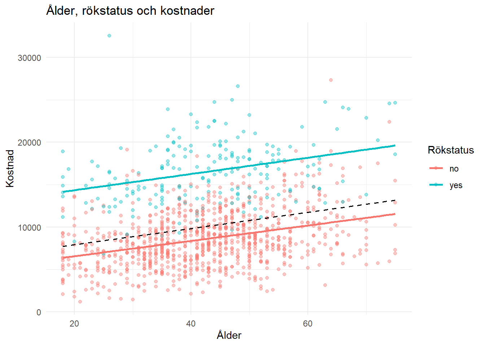
Som komplement användes en korrelationsmatris för att ge en samlad bild av sambanden mellan de numeriska variablerna. Analysen visar att variabler relaterade till tidigare skadehistorik samt ålder uppvisar de starkaste positiva sambanden med kostnader. BMI uppvisar också ett positivt samband, men detta är svagare i jämförelse.
plot_correlation_matrix(insurance_cost)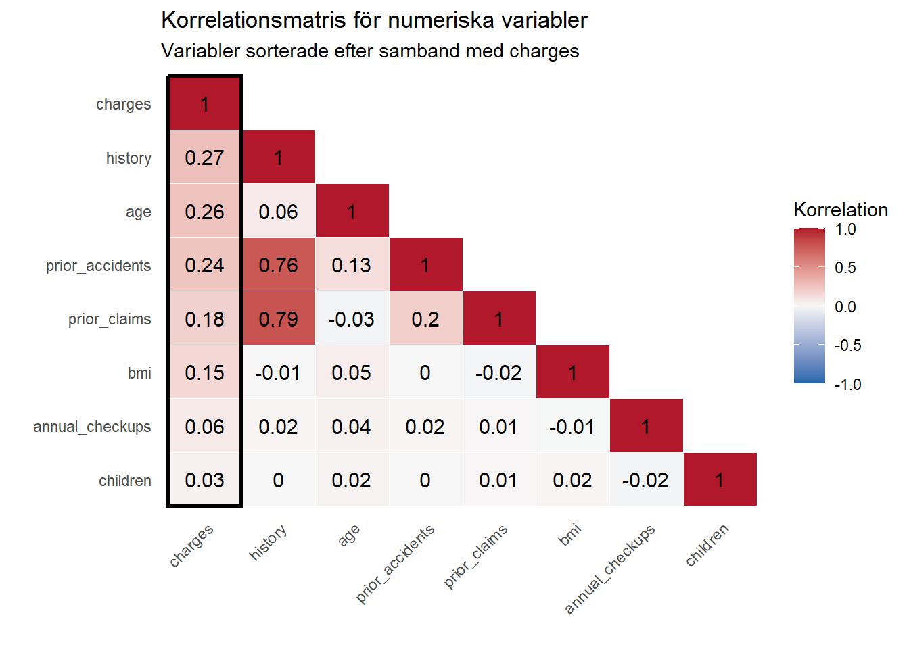
Sammantaget indikerar resultaten att ålder, skadehistorik och rökstatus är centrala faktorer för att förklara variationen i försäkringskostnader, medan BMI bidrar med ytterligare men mer begränsad förklaringskraft. Dessa variabler framstår därför som särskilt relevanta att inkludera i den fortsatta regressionsanalysen.
4.3 Skillnader mellan grupper
För att undersöka skillnader i kostnadsnivå mellan olika grupper analyserades kategoriska variabler med hjälp av boxplots. Som stöd för urvalet genomfördes även en inledande jämförelse av skillnader i kostnadsnivå mellan grupper.
Denna analys indikerade att rökstatus samt tidigare skadehistorik uppvisade de största skillnaderna i kostnader. Även den konstruerade variabeln risk_level visade tydliga skillnader mellan grupper.
Variabeln chronic_condition uppvisade också relativt tydliga skillnader, men i mindre utsträckning jämfört med rökstatus och skadehistorik. Övriga kategoriska variabler visade däremot mer begränsade skillnader i kostnadsnivå och bedömdes därför vara mindre centrala i den fortsatta analysen.
Rökstatus visar tydliga skillnader i kostnader, där rökare har avsevärt högre kostnader än icke-rökare. Skillnaden är stor både i median och spridning, vilket indikerar att rökning är en av de mest betydelsefulla faktorerna bakom variationen i försäkringskostnader.
plot_charges_by_group(
insurance_cost,
smoker,
title = "Kostnader per rökstatus",
x_label = "Rökstatus"
)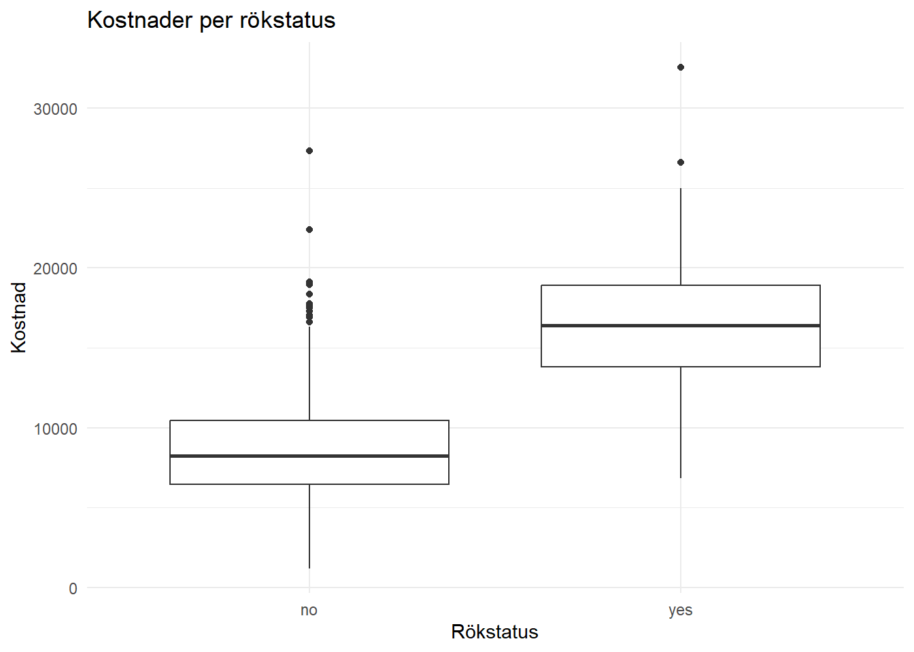
Även tidigare skadehistorik visar tydliga skillnader i kostnader. Individer med högre historiknivå uppvisar generellt högre kostnader, vilket tyder på att tidigare olyckor och försäkringsärenden är viktiga indikatorer för framtida kostnader.
plot_charges_by_group(
insurance_cost,
history_level,
title = "Kostnader per historiknivå",
x_label = "Historiknivå"
)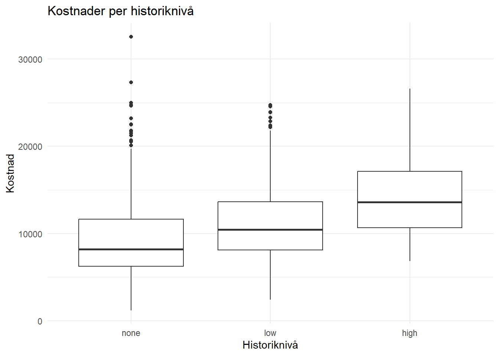
Sammantaget visar analysen att rökstatus och tidigare skadehistorik är starkt relaterade till försäkringskostnader, medan andra kategoriska variabler bidrar i mindre utsträckning till att förklara variationen i kostnader. Resultaten ger därmed ett tydligt underlag för vilka variabler som bör prioriteras i den fortsatta regressionsanalysen.
4.4 Sammanfattning
Den beskrivande analysen visar att försäkringskostnader påverkas av flera faktorer, där rökstatus, ålder och tidigare skadehistorik framstår som särskilt betydelsefulla. Resultaten indikerar även att vissa variabler samverkar, vilket motiverar en vidare analys med regressionsmodeller för att kvantifiera dessa samband.
5 Regrissionsanalys
5.1 Val av prediktorer
Utifrån den beskrivande analysen valdes prediktorer som visade tydliga samband med försäkringskostnader. Särskilt relevanta variabler var age, bmi och smoker, då dessa uppvisade tydliga mönster i både scatterplots och gruppjämförelser.
För att förbättra modellens förklaringskraft inkluderades även chronic_condition och history, eftersom dessa variabler fångar individers hälsotillstånd och tidigare skadehistorik, vilka båda visade samband med kostnader.
Vid modelleringen är det viktigt att undvika att inkludera variabler som överlappar varandra informationsmässigt. Därför användes den numeriska variabeln history istället för den kategoriserade varianten history_level, då den ger mer detaljerad information och uppvisar ett ungefär linjärt samband med kostnader. Generellt eftersträvades att undvika redundanta variabler i modellen, för att förbättra både tolkbarhet och modellens stabilitet.
5.2 Modell 1: grundmodell
En första modell byggdes med age, bmi och smoker som prediktorer. Dessa variabler valdes eftersom de i den beskrivande analysen visade tydliga samband med kostnader och samtidigt är enkla att tolka.
summary(model_1)
Call:
lm(formula = charges ~ age + bmi + smoker, data = insurance_cost)
Residuals:
Min 1Q Median 3Q Max
-8154.5 -2149.5 -255.8 1838.9 17717.0
Coefficients:
Estimate Std. Error t value Pr(>|t|)
(Intercept) 364.515 646.479 0.564 0.573
age 88.578 7.559 11.719 < 2e-16 ***
bmi 162.288 20.644 7.861 9.05e-15 ***
smokeryes 7969.128 240.208 33.176 < 2e-16 ***
---
Signif. codes: 0 '***' 0.001 '**' 0.01 '*' 0.05 '.' 0.1 ' ' 1
Residual standard error: 3094 on 1096 degrees of freedom
Multiple R-squared: 0.5437, Adjusted R-squared: 0.5425
F-statistic: 435.3 on 3 and 1096 DF, p-value: < 2.2e-16Den första modellen visar att samtliga prediktorer utom interceptet är statistiskt signifikanta (p < 0.001). Särskilt rökstatus har en stark effekt, där rökare i genomsnitt har ungefär 8 000 högre kostnader än icke-rökare givet samma ålder och BMI. Även ålder och BMI uppvisar positiva samband med kostnader, vilket innebär att högre ålder och högre BMI tenderar att vara förknippade med högre försäkringskostnader.
Modellens förklaringsgrad är ungefär 54 procent, vilket innebär att modellen fångar en betydande del av variationen i kostnader, men att en stor del fortfarande förblir oförklarad. Justerat R² är mycket likt R², vilket indikerar att modellen inte innehåller några uppenbart överflödiga variabler. Modellen är därmed användbar för att beskriva generella samband, men mindre tillförlitlig för att förutsäga mer extrema kostnader.
Diagnostik för modell 1
plot_residuals_grouped(
model_1,
insurance_cost,
color_var = smoker,
title = "Residualplot för modell 1"
)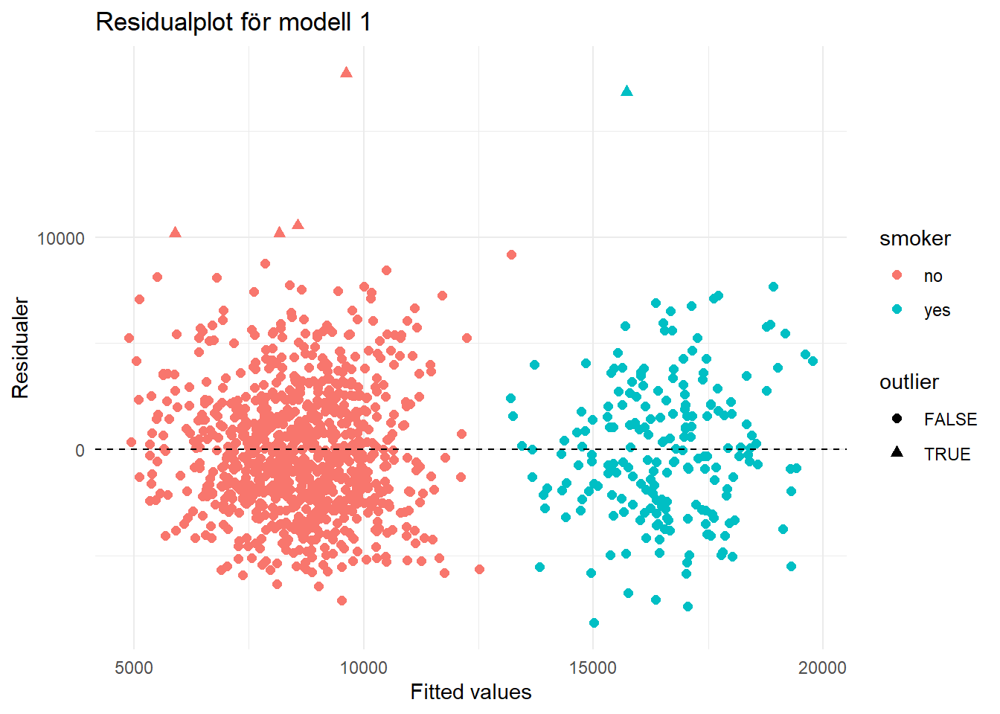
bptest(model_1)
studentized Breusch-Pagan test
data: model_1
BP = 9.4621, df = 3, p-value = 0.02374Residualanalysen visar att residualerna i huvudsak är centrerade kring noll, vilket är önskvärt, men att vissa observationer avviker tydligt. Spridningen varierar något över nivåer av fitted values, vilket indikerar möjlig heteroskedasticitet. Detta bekräftas av Breusch–Pagan-testet, som är statistiskt signifikant (p = 0.024), vilket innebär att nollhypotesen om konstant varians förkastas och att modellen uppvisar heteroskedasticitet.
plot_qq_model(model_1, title = "Q-Q-plot för modell 1")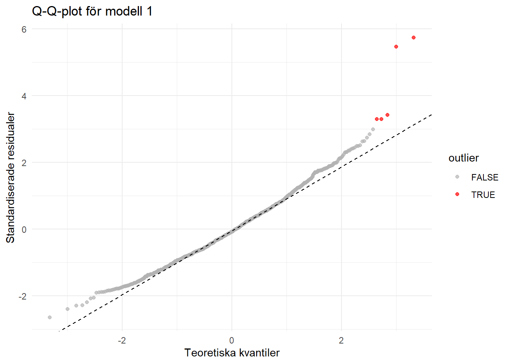
Q-Q-plottet visar att residualerna följer normalfördelningen relativt väl i mitten av fördelningen, men avviker i svansarna. Detta tyder på att modellen har svårare att fånga mycket höga kostnader, vilket är vanligt i kostnadsdata.
Sammantaget tyder resultaten på att de valda prediktorerna bidrar till att förklara variationen i försäkringskostnader, även om modellen har begränsningar i att fånga extrema värden.
5.3 Modell 2: utökad modell
För att förbättra modellen inkluderades ytterligare variabler som visade samband med kostnader i den beskrivande analysen. Den utökade modellen innehåller, utöver age, bmi och smoker, även chronic_condition och history.
summary(model_2)
Call:
lm(formula = charges ~ age + bmi + smoker + chronic_condition +
history, data = insurance_cost)
Residuals:
Min 1Q Median 3Q Max
-9320.4 -1553.5 -153.5 1469.6 18345.5
Coefficients:
Estimate Std. Error t value Pr(>|t|)
(Intercept) -445.906 508.806 -0.876 0.381
age 72.396 5.967 12.133 <2e-16 ***
bmi 166.211 16.207 10.255 <2e-16 ***
smokeryes 7574.937 189.497 39.974 <2e-16 ***
chronic_conditionyes 3956.908 172.045 22.999 <2e-16 ***
history 980.065 92.337 10.614 <2e-16 ***
---
Signif. codes: 0 '***' 0.001 '**' 0.01 '*' 0.05 '.' 0.1 ' ' 1
Residual standard error: 2429 on 1094 degrees of freedom
Multiple R-squared: 0.7193, Adjusted R-squared: 0.718
F-statistic: 560.7 on 5 and 1094 DF, p-value: < 2.2e-16Den utökade modellen visar en tydlig förbättring jämfört med grundmodellen. Samtliga prediktorer är statistiskt signifikanta (p < 0.001), vilket indikerar att de bidrar till att förklara variationen i försäkringskostnader.
Förklaringsgraden ökar till cirka 72 procent, vilket innebär att modellen fångar en större del av variationen i kostnader jämfört med modell 1. Justerat R² är mycket likt R², vilket indikerar att de tillagda variablerna bidrar till modellen utan att introducera onödig komplexitet. Detta tyder på att variabler relaterade till hälsa och skadehistorik utgör viktiga faktorer för att förstå försäkringskostnader.
Diagnostik modell 2
plot_residuals_grouped(
model_2,
insurance_cost,
color_var = smoker,
title = "Residualplot för modell 2"
)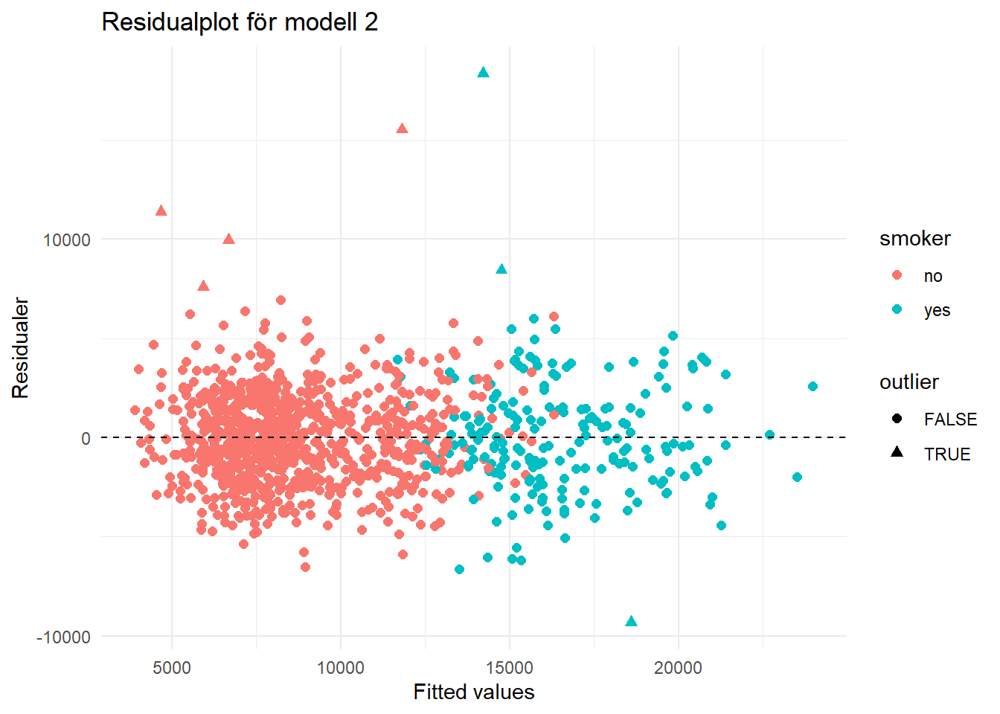
bptest(model_2)
studentized Breusch-Pagan test
data: model_2
BP = 9.9833, df = 5, p-value = 0.07571Residualanalysen visar att modellen fortfarande är centrerad kring noll, vilket är önskvärt. Spridningen i residualerna minskar tydligt jämfört med modell 1, vilket även bekräftas av en markant minskning i residual standard error. Detta tyder på att modellen har en bättre anpassning och fångar variationen i kostnader mer effektivt.
Samtidigt är skillnaden i residualernas spridning visuellt mindre tydlig, då residualplottarna för modell 1 och modell 2 uppvisar liknande mönster. Detta beror sannolikt på att extrema observationer fortfarande förekommer och påverkar den övergripande bilden.
Residualerna uppvisar inte heller några starka systematiska mönster över olika nivåer av fitted values, vilket tyder på att antagandet om konstant varians i huvudsak är uppfyllt.
Detta stöds även av Breusch–Pagan-testet, som inte är statistiskt signifikant (p = 0.076), vilket innebär att nollhypotesen om homoskedasticitet inte kan förkastas.
plot_qq_model(model_2, title = "Q-Q-plot för modell 2")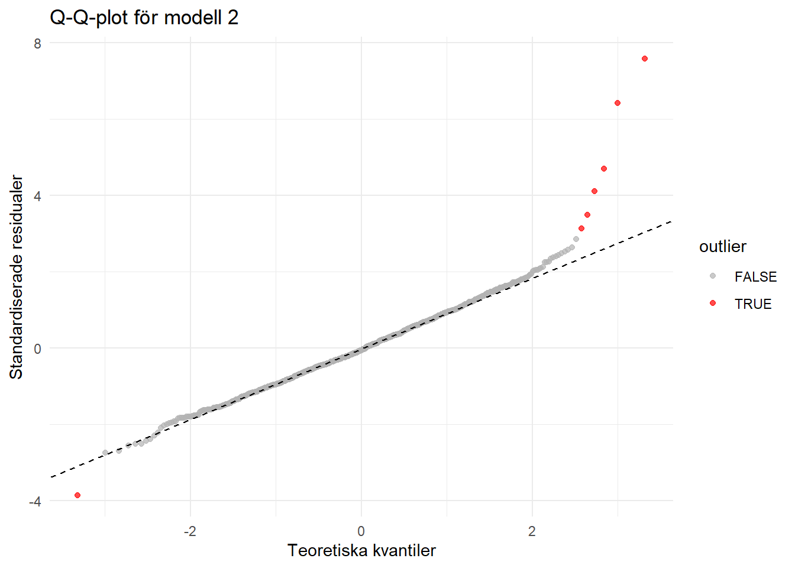
Q-Q-plottet visar ett liknande mönster som i modell 1, där residualerna följer normalfördelningen relativt väl i mitten men avviker i svansarna. Detta tyder på att tillägget av nya prediktorer inte i någon större utsträckning förbättrar residualernas normalitet.
Sammantaget innebär modell 2 en tydlig förbättring jämfört med grundmodellen, framför allt genom ökad förklaringsgrad och minskad residualspridning, även om vissa begränsningar kvarstår i att fånga extrema värden.
Avvikelserna i residualernas svansar är i linje med den tidigare observerade snedfördelningen i kostnadsvariabeln. För att förbättra modellantagandena testas därför en log-transformerad modell.
5.4 Modell 3: log-transformerad modell
Eftersom försäkringskostnaderna tidigare visats vara högerskev fördelade testas en modell med log-transformerad responsvariabel. Syftet är att undersöka om detta kan förbättra modellens anpassning samt bättre uppfylla modellantaganden, såsom normalfördelade residualer och konstant varians.
summary(model_3)
Call:
lm(formula = log_charges ~ age + bmi + smoker + chronic_condition +
history, data = insurance_cost)
Residuals:
Min 1Q Median 3Q Max
-1.58684 -0.15071 0.02647 0.19291 1.13332
Coefficients:
Estimate Std. Error t value Pr(>|t|)
(Intercept) 7.9749115 0.0624011 127.801 <2e-16 ***
age 0.0082852 0.0007318 11.322 <2e-16 ***
bmi 0.0184352 0.0019877 9.275 <2e-16 ***
smokeryes 0.6681663 0.0232403 28.750 <2e-16 ***
chronic_conditionyes 0.4029049 0.0211000 19.095 <2e-16 ***
history 0.1089449 0.0113245 9.620 <2e-16 ***
---
Signif. codes: 0 '***' 0.001 '**' 0.01 '*' 0.05 '.' 0.1 ' ' 1
Residual standard error: 0.2979 on 1094 degrees of freedom
Multiple R-squared: 0.61, Adjusted R-squared: 0.6082
F-statistic: 342.2 on 5 and 1094 DF, p-value: < 2.2e-16Den log-transformerade modellen visar att samtliga prediktorer är statistiskt signifikanta (p < 0.001). Koefficienterna kan tolkas som approximativa procentuella förändringar i kostnader, vilket innebär att variablernas effekter nu uttrycks relativt snarare än i absoluta termer.
Förklaringsgraden uppgår till cirka 61 procent. Även om detta är lägre än i modell 2 är värdena inte direkt jämförbara, eftersom modellerna använder olika skalor på responsvariabeln. Den log-transformerade modellen bör därför främst utvärderas utifrån hur väl den uppfyller modellantagandena.
Diagnostik modell 3
plot_residuals_grouped(
model_3,
insurance_cost,
color_var = smoker,
title = "Residualplot för modell 3"
)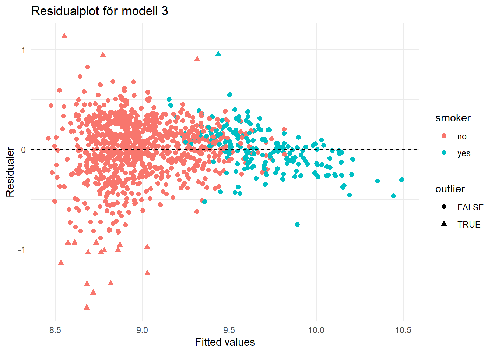
bptest(model_3)
studentized Breusch-Pagan test
data: model_3
BP = 56.529, df = 5, p-value = 6.323e-11Residualanalysen visar att residualerna är centrerade kring noll, men att spridningen varierar systematiskt över nivåer av fitted values. Spridningen är större vid lägre värden och minskar vid högre, vilket tyder på heteroskedasticitet. För att undersöka antagandet om konstant varians genomfördes ett Breusch–Pagan-test. Testet är statistiskt signifikant (p < 0.001), vilket ger starkt stöd för förekomst av heteroskedasticitet i modellen.
plot_qq_model(model_3, title = "Q-Q-plot för modell 3")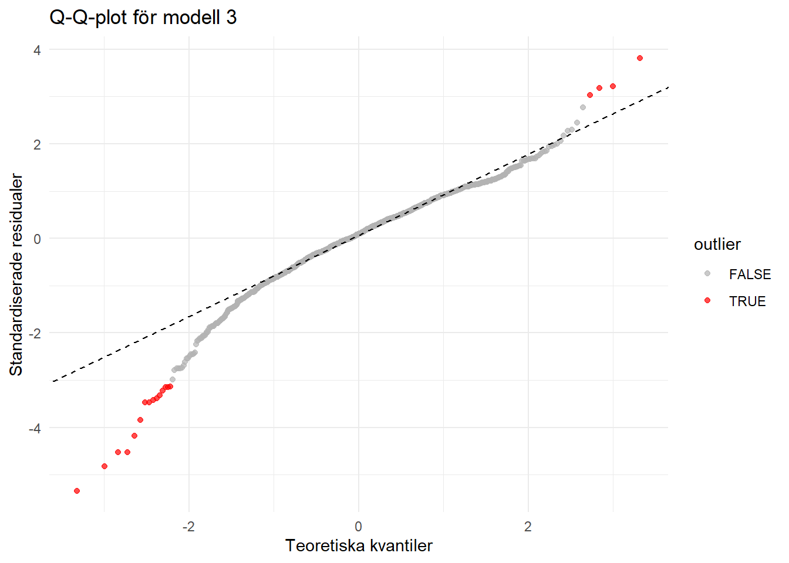
Q-Q-plottet visar att residualerna ligger närmare den teoretiska linjen jämfört med tidigare modeller, särskilt i mitten av fördelningen. Avvikelser kvarstår i svansarna, men dessa är mer symmetriska än tidigare, vilket indikerar en förbättrad normalitet.
Sammantaget förbättrar den log-transformerade modellen normalitetsantagandet jämfört med tidigare modeller, men uppvisar samtidigt tydlig heteroskedasticitet. Detta står i kontrast till modell 2, där variansantagandet i högre grad var uppfyllt. Valet av modell innebär därmed en avvägning mellan förbättrad normalitet och försämrad variansstruktur.
5.5 Modell 4: Slutlig modell
Som slutlig modell väljs den log-transformerade modellen med interaktion mellan ålder och rökstatus. Syftet med denna modell är att fånga att effekten av ålder på försäkringskostnader kan skilja sig mellan rökare och icke-rökare.
summary(model_final)
Call:
lm(formula = log_charges ~ age * smoker + bmi + chronic_condition +
history, data = insurance_cost)
Residuals:
Min 1Q Median 3Q Max
-1.5620 -0.1429 0.0255 0.1878 1.1495
Coefficients:
Estimate Std. Error t value Pr(>|t|)
(Intercept) 7.9248598 0.0639991 123.828 < 2e-16 ***
age 0.0094265 0.0008084 11.661 < 2e-16 ***
smokeryes 0.9250057 0.0821436 11.261 < 2e-16 ***
bmi 0.0184785 0.0019790 9.337 < 2e-16 ***
chronic_conditionyes 0.4034465 0.0210085 19.204 < 2e-16 ***
history 0.1096225 0.0112769 9.721 < 2e-16 ***
age:smokeryes -0.0059994 0.0018411 -3.259 0.00115 **
---
Signif. codes: 0 '***' 0.001 '**' 0.01 '*' 0.05 '.' 0.1 ' ' 1
Residual standard error: 0.2966 on 1093 degrees of freedom
Multiple R-squared: 0.6137, Adjusted R-squared: 0.6116
F-statistic: 289.4 on 6 and 1093 DF, p-value: < 2.2e-16Den slutliga modellen visar att samtliga prediktorer är statistiskt signifikanta (p < 0.01). Eftersom modellen är log-transformerad kan koefficienterna tolkas som approximativa procentuella förändringar i kostnader. Rökstatus har en stark effekt, där rökare har avsevärt högre kostnader än icke-rökare.
Interaktionstermen mellan ålder och rökstatus är negativ och statistiskt signifikant, vilket indikerar att ålderns effekt på kostnader skiljer sig mellan grupperna. För icke-rökare ökar kostnaderna med cirka 0.94 procent per år, medan motsvarande ökning för rökare är cirka 0.34 procent per år. Detta innebär att ålder har en svagare påverkan på kostnader för rökare än för icke-rökare. Resultaten tyder på att rökning utgör en dominerande riskfaktor, vilket minskar den relativa betydelsen av ålder för denna grupp.
Jämfört med modell 3 innebär tillägget av en interaktionsterm en mindre förbättring av modellens anpassning, vilket framgår av en något högre förklaringsgrad och en marginellt lägre residual standard error.
Interaktionstermen är dessutom statistiskt signifikant, vilket indikerar att sambandet mellan ålder och kostnader skiljer sig mellan rökare och icke-rökare. Detta innebär att modellen fångar en ytterligare dimension av variationen i data.
Samtidigt är förbättringen relativt begränsad, vilket tyder på att modellen i stort sett behåller samma struktur som modell 3, men med en mer nyanserad beskrivning av sambanden.
plot_residuals_grouped(
model_final,
insurance_cost,
color_var = smoker,
title = "Residualplot för modell 4"
)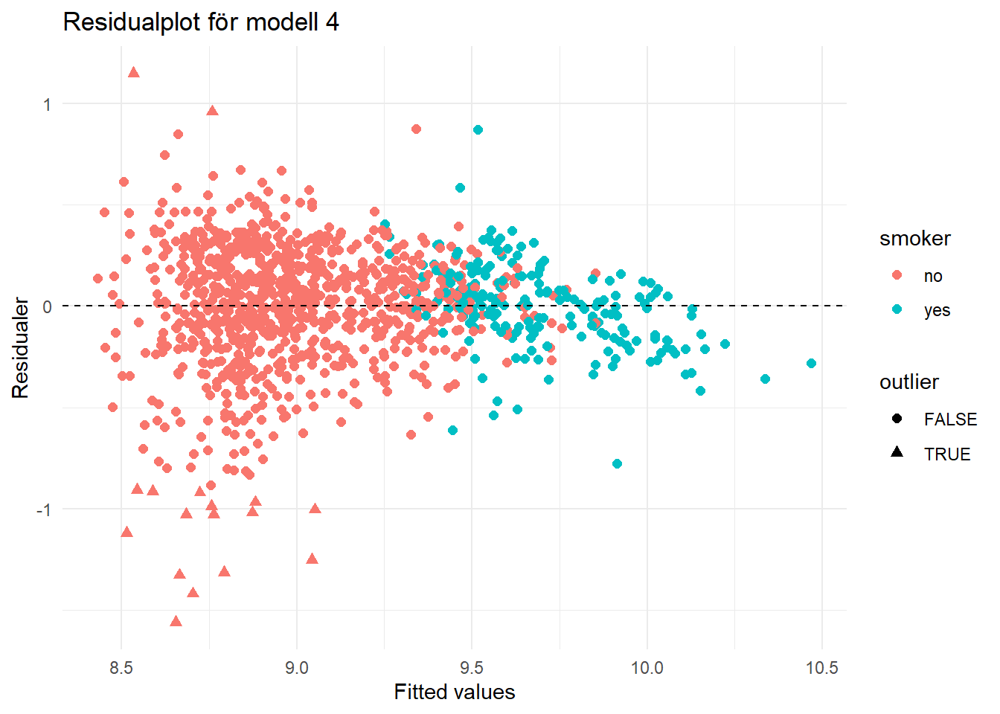
plot_qq_model(model_final, title = "Q-Q-plot för modell 4")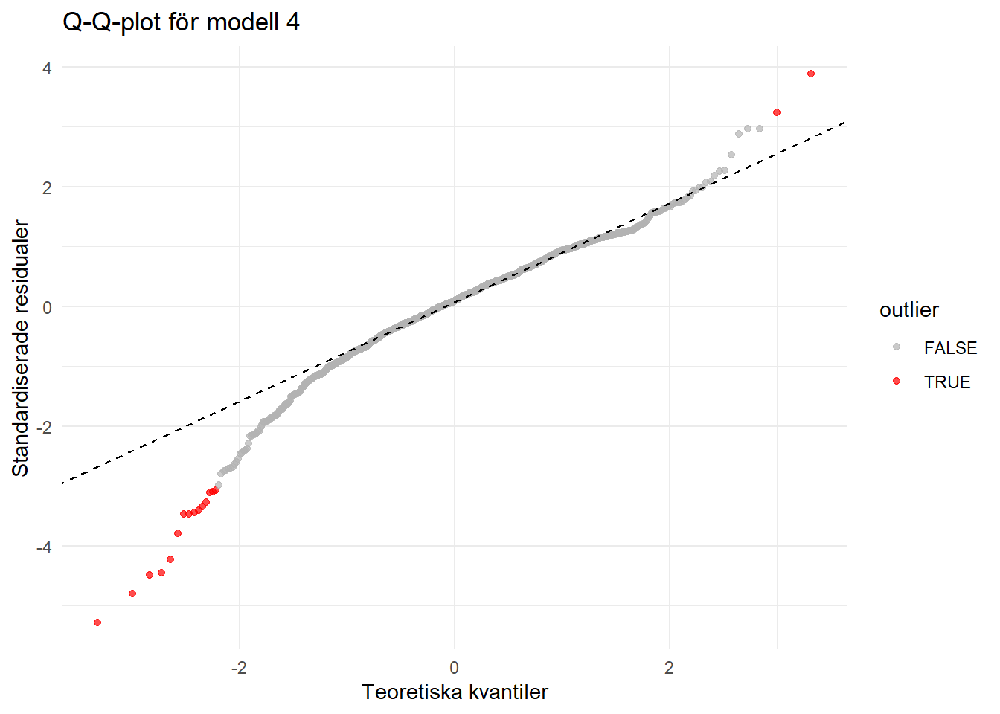
bptest(model_final)
studentized Breusch-Pagan test
data: model_final
BP = 60.061, df = 6, p-value = 4.374e-11Diagnostiken visar ett liknande mönster som för modell 3, vilket är förväntat då modellerna endast skiljer sig genom en interaktionsterm. Residualplottet visar att spridningen varierar över nivåer av fitted values, vilket tyder på viss heteroskedasticitet. Detta stöds av Breusch–Pagan-testet, som är statistiskt signifikant och indikerar att variansantagandet inte är fullt uppfyllt. Q-Q-plottet visar att residualerna följer normalfördelningen relativt väl i mitten av fördelningen, med kvarvarande avvikelser i svansarna.
Sammantaget innebär modellen en förbättring jämfört med modeller i ursprunglig skala, särskilt genom bättre hantering av snedfördelning och extrema värden. Trots kvarvarande heteroskedasticitet bedöms modellen ge en mer robust och tolkbar beskrivning av sambanden i data.
Valet av slutlig modell innebär därmed en avvägning mellan hög förklaringsgrad och väl uppfyllda modellantaganden. Trots att modell 2 uppvisade högre förklaringsgrad valdes den bort, då dess residualer visade tydliga avvikelser från normalfördelning. Den log-transformerade modellen bedöms därför vara mer lämplig för att analysera försäkringskostnader.
Som slutlig modell väljs den log-transformerade modellen med interaktion mellan ålder och rökstatus.
summary(model_final)
Call:
lm(formula = log_charges ~ age * smoker + bmi + chronic_condition +
history, data = insurance_cost)
Residuals:
Min 1Q Median 3Q Max
-1.5620 -0.1429 0.0255 0.1878 1.1495
Coefficients:
Estimate Std. Error t value Pr(>|t|)
(Intercept) 7.9248598 0.0639991 123.828 < 2e-16 ***
age 0.0094265 0.0008084 11.661 < 2e-16 ***
smokeryes 0.9250057 0.0821436 11.261 < 2e-16 ***
bmi 0.0184785 0.0019790 9.337 < 2e-16 ***
chronic_conditionyes 0.4034465 0.0210085 19.204 < 2e-16 ***
history 0.1096225 0.0112769 9.721 < 2e-16 ***
age:smokeryes -0.0059994 0.0018411 -3.259 0.00115 **
---
Signif. codes: 0 '***' 0.001 '**' 0.01 '*' 0.05 '.' 0.1 ' ' 1
Residual standard error: 0.2966 on 1093 degrees of freedom
Multiple R-squared: 0.6137, Adjusted R-squared: 0.6116
F-statistic: 289.4 on 6 and 1093 DF, p-value: < 2.2e-16Den slutliga modellen visar att samtliga prediktorer är statistiskt signifikanta. Eftersom modellen är log-transformerad kan effekterna tolkas som relativa förändringar i kostnader. Exempelvis innebär koefficienten för smoker att rökare har avsevärt högre kostnader än icke-rökare.
Interaktionstermen mellan ålder och rökstatus är negativ och statistiskt signifikant, vilket indikerar att ålderns effekt på kostnader skiljer sig mellan grupperna. För icke-rökare ökar kostnaderna med cirka 0.94 procent per år, medan motsvarande ökning för rökare är cirka 0.34 procent per år. Detta innebär att ålder har en svagare påverkan på kostnader för rökare än för icke-rökare.
Diagnostiken för modellen visar ett liknande mönster som för modell 3, med förbättrad normalitet i residualerna men kvarvarande heteroskedasticitet. Detta innebär att modellen inte fullt ut uppfyller alla antaganden, men att den ger en mer stabil representation av sambanden jämfört med modeller i ursprunglig skala.
Valet av slutlig modell baseras på att den log-transformerade modellen ger en mer rimlig representation av sambanden, särskilt genom förbättrad normalitet i residualerna och en mer stabil hantering av extrema värden. Även om modellen uppvisar viss heteroskedasticitet, bedöms den ge en mer robust beskrivning av försäkringskostnader.
Trots att modell 2 uppvisade högre förklaringsgrad valdes den bort, då residualerna i denna modell visade tydliga avvikelser från normalfördelning. Valet av modell innebär därmed en avvägning mellan hög förklaringsgrad och bättre uppfyllda modellantaganden.
Detta tyder på att rökning i sig utgör en dominerande riskfaktor, vilket minskar den relativa betydelsen av ålder för denna grupp.
Diagnostiken för modellen visar ett liknande mönster som för modell 3, med förbättrad normalitet i residualerna men kvarvarande heteroskedasticitet. Detta innebär att modellen inte fullt ut uppfyller alla antaganden, men att den ger en mer stabil representation av sambanden jämfört med modeller i ursprunglig skala.
Valet av slutlig modell baseras på att den log-transformerade modellen ger en mer rimlig representation av sambanden, särskilt genom förbättrad normalitet i residualerna och en mer stabil hantering av extrema värden. Även om modellen uppvisar viss heteroskedasticitet, bedöms den ge en mer robust beskrivning av försäkringskostnader.
Trots att modell 2 uppvisade högre förklaringsgrad valdes den bort, då residualerna i denna modell visade tydliga avvikelser från normalfördelning. Valet av modell innebär därmed en avvägning mellan hög förklaringsgrad och bättre uppfyllda modellantaganden.
Resultaten tyder på att rökning utgör en dominerande riskfaktor, vilket minskar den relativa betydelsen av ålder för denna grupp.
Som slutlig modell väljs den log-transformerade modellen med interaktion mellan ålder och rökstatus.
Valet baseras på att denna modell ger en mer rimlig representation av sambanden, särskilt genom förbättrad normalitet i residualerna och en mer stabil hantering av extrema värden. Även om modellen uppvisar viss heteroskedasticitet, bedöms den ge en mer robust beskrivning av försäkringskostnader jämfört med modeller baserade på den ursprungliga skalan.
Modellen möjliggör dessutom en mer tolkbar analys, där effekterna kan uttryckas som relativa förändringar i kostnader.
Trots att modell 2 uppvisade högre förklaringsgrad, valdes den bort då residualerna i denna modell visade tydliga avvikelser från normalfördelning, vilket motiverade användningen av en log-transformerad modell.
5.2 Modell 1 - grundmodell
model_1 <- lm(charges ~ age + bmi + smoker, data = insurance_cost) summary(model_1)
age och bmi var relevanta numeriska variabler smoker var tydligt stark i gruppjämförelserna
En första modell byggdes med ålder, BMI och rökstatus som prediktorer. Dessa variabler valdes eftersom de i den beskrivande analysen uppvisade tydliga samband med kostnader och samtidigt är enkla att tolka.
5.3 Modell 2 – utökad modell
model_2 <- lm(charges ~ age + bmi + smoker + chronic_condition + history_level + exercise_level, data = insurance_cost) summary(model_2)
Alternativt kan du använda history i stället för history_level om du vill behålla den som numerisk.
För att undersöka om modellen kunde förbättras byggdes även en utökad modell där ytterligare variabler inkluderades. Dessa valdes utifrån tidigare analys och med ambitionen att fånga både hälsorelaterade faktorer och skadehistorik.
5.4 Modell 3 log-transformerad modell
model_3 <- lm(log_charges ~ age + bmi + smoker + chronic_condition + history_level + exercise_level, data = insurance_cost) summary(model_3)
Eftersom kostnadsvariabeln var tydligt snedfördelad testades även en modell med log-transformerad responsvariabel. Syftet var att undersöka om denna modell gav en bättre anpassning och mer rimliga modellantaganden.